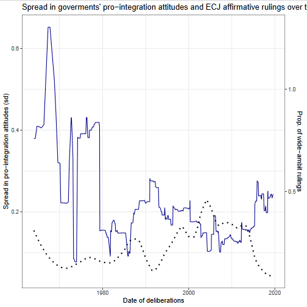

The Court of Justice of the European Union (CJEU) is probably the world’s most influential international court, functioning in many respects as a federal supreme court.
As of today, little research exists on how judges enter the Court and how its internal organization affects decision making. This project opens the black box of these decision-making processes to consider governments’ and judges’ strategic behavior.
I show that judges' performance and governments' political preferences are intertwined both when judges are appointed and when influence is distributed within the Court.
Judicial appointments to the CJEU
- “Holding Judges To Account. Policy, Performance and Impartiality” with Daniel Naurin presented at the ECPR Joint Sessions 2019 (Mons)

Judiciaries should be both independent and accountable, but while the conditions for judicial independence have been extensively studied judicial accountability is underexplored. We study how the power to hold judges accountable by deciding over their reappointments is exercised in courts with renewable terms. We theorize that appointers seek information and retain candidates that are both willing and able to have effective impact on the case law in the direction desired by the appointer. Whether such information is available depends on the organization and transparency of the court.
To test our theory, we leverage institutional features of the Court of Justice of the European Union. We demonstrate how renewable terms in the EU is both incentivizing judicial performance and constitutes a powerful mechanism for judicial accountability, even in the absence of public votes. We also find that secrecy of votes does not protect judges from deselection based on political ideology.
A draft version can be found here.
- “How do merit commissions affect judicial behavior? Evidence from the Court of Justice of the European Union” with Sivaram Cheruvu, Joshua Fjelstul, and Daniel Naurin presented at APSA 2022 (Montréal)

Governments create monitoring entities to ensure that policymakers are working effectively. Monitors' control over retaining and selecting policymakers, however, may create incentives that lead to sub-optimal outcomes. One such entity is a merit commission (also known as a judicial council) that evaluates judges subject to retention and (or) selection. How do merit commissions affect judicial behavior? We construct a formal model arguing that lower competence incumbent judges only subject to merit retention will complete cases more quickly at the expense of quality opinion-writing, as their productivity is a signal of their effort investment to the commission. Conversely, judges subject to merit selection and subsequent retention will not make the same tradeoff, as the commission’s initial selection of them makes it more costly for the commission to negatively evaluate them upon retention. We provide evidence leveraging the Article 255 panel for (re)appointments to the Court of Justice of the European Union.
Strategic decision making in the CJEU
- “Leveling and Spotlighting: How International Courts Refract Private Litigation to Build Institutional Legitimacy” with Tommaso Pavone and Louisa Boulaziz presented at EUSA 2022 (Miami)
Private litigants are increasingly turning to international courts (ICs) to pursue their claims. We argue that ICs can refract inequalities in private litigation to build institutional legitimacy. By leveling the odds for individuals and spotlighting their claims over those of more resourceful corporate actors, ICs can cultivate civil society support and legitimate judicial policymaking in intergovernmental polities with limited avenues for citizens to exercise their voice. To assess this argument we scrutinize the first IC to provide access to private litigants: the European Court of Justice (ECJ). We show that ECJ judges have privileged individuals in their public advocacy and assess if they matched words with deeds by analyzing the first dataset of parties involved in cases referred to the ECJ from national courts. We find that the ECJ “levels”, supporting individual claims more than those raised by businesses boasting larger and more experienced legal teams. The ECJ also “spotlights”, wielding press releases to broadcast support for individuals and catalyze favorable commentary in law reviews. Our findings break with existing research on how the “haves” come out ahead in litigation, suggesting that the conventional wisdom does not travel to fledgling ICs seeking creative ways to build institutional legitimacy.
A draft of the paper can be found here.
- Judicious judging: The effects of political division on decision making in the European Court of Justice with Urska Sadl presented at APSA 2022 (Montréal)
How do courts react to political debate? Their legitimacy hinges on their ability to uphold the law impervious to political pressure. The authority of the ruling follows from the court’s reputation as apolitical. Politicization – understood as salient questions that divide stakeholders – threatens to erode this image. It imposes conflicting demands: Courts can prove their worth by solving questions for which there is a demand for a legal solution, but they risk their reputation in a politically divided environment.
Literature on judicial independence focuses on direct and explicit threats issued by the political branch. Arguments of legislative override typically predict that political division empowers the judiciary. In contrast, we argue that courts are sensitive even to the potential eruption of conflict because they value their diffuse legitimacy. Effective judicial policy making is thus a question of strategic timing.
To test our theory, we study the European Court of Justice. Known as the “dark horse of integration”, it is an independent court with political sway. Yet political considerations profoundly affects its decision making. We draw on unprecedented data mapping out the legal ambit of all preliminary cases relating to the Free movement of people throughout the history. We find that the Court holds back on the legal ambit of rulings, preferring to bolster its institutional authority, in times of political division. Reversely, it broadens the ambit when salience is high and conflict low. Thus, when salience and division combine, they null each other out; leaving traces only in the decision-making process.
- Litigating in the European Court of Justice: Lawyers' influence on supranational decision-making with Tommaso Pavone and Louisa Boulaziz presented at ECPR 2021 (zoom)
This paper assesses how private litigants’ propensity to win cases before international courts is conditioned by the quality of their legal counsel and by the constraints of intergovernmental politics. Building on legal mobilization and party capability theories, we argue that quality legal counsel bolsters a private party’s capacity to convey legal information to judges that is relevant to deciding the case in their favor. At the same time, we build on intergovernmentalist theories of international adjudication positing that judges will also be sensitive to political signals by national governments. As a result, we hypothesize that the influence of quality legal counsel on international judges is conditioned by the political support that member states' express.
To assess these claims, we exploit an original dataset of parties and lawyers involved in disputes before the European Court of Justice (ECJ) – arguably the most successful and influential international court procuring access to private litigants. We find being represented by a lawyer bolsters the probability that litigants submit observations and win cases before the ECJ, yet this effect is the highest in the minority of cases where a majority of more member state governments intervene in favor of the applicant. We conclude by highlighting the necessity of combining theories of legal mobilization and intergovernmental politics in order to explain judicial decision-making in international courts.
Published work
If who makes decisions within courts matters for the outcome of cases and their reception, then studying how cases and judges are matched is essential to understanding judicial independence.
-
“The CJEU Database Platform: Decisions and Decision-Makers” (2023) with Stein Arne Brekke, Joshua Fjelstul and Daniel Naurin. Journal of Law and Courts 0(0), 1-35.
-
“Building legitimacy: strategic case allocations in the Court of Justice of the European Union” (2020) Journal of European Public Policy 27 (8), 1215-1235.